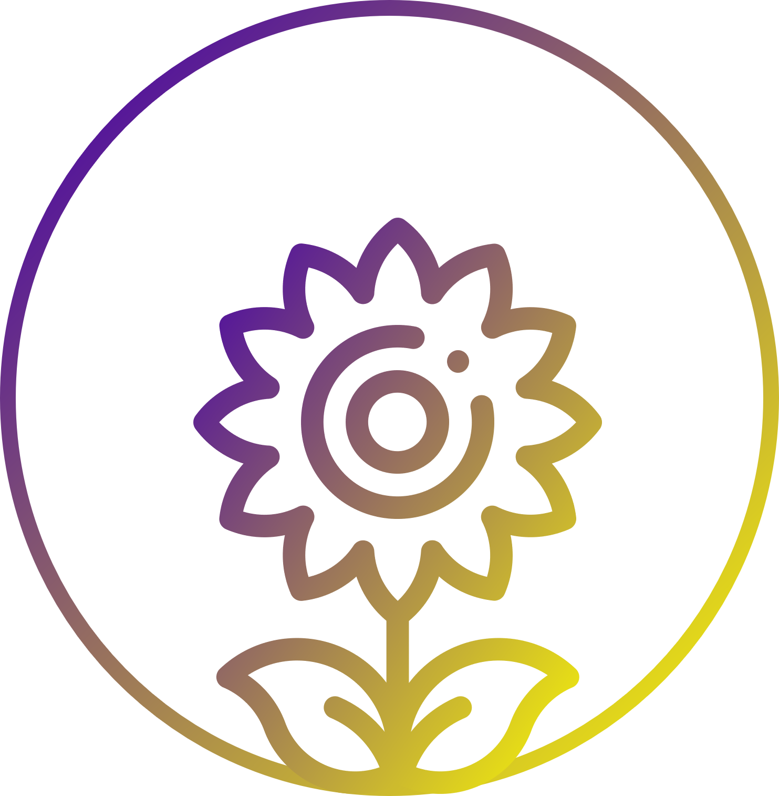
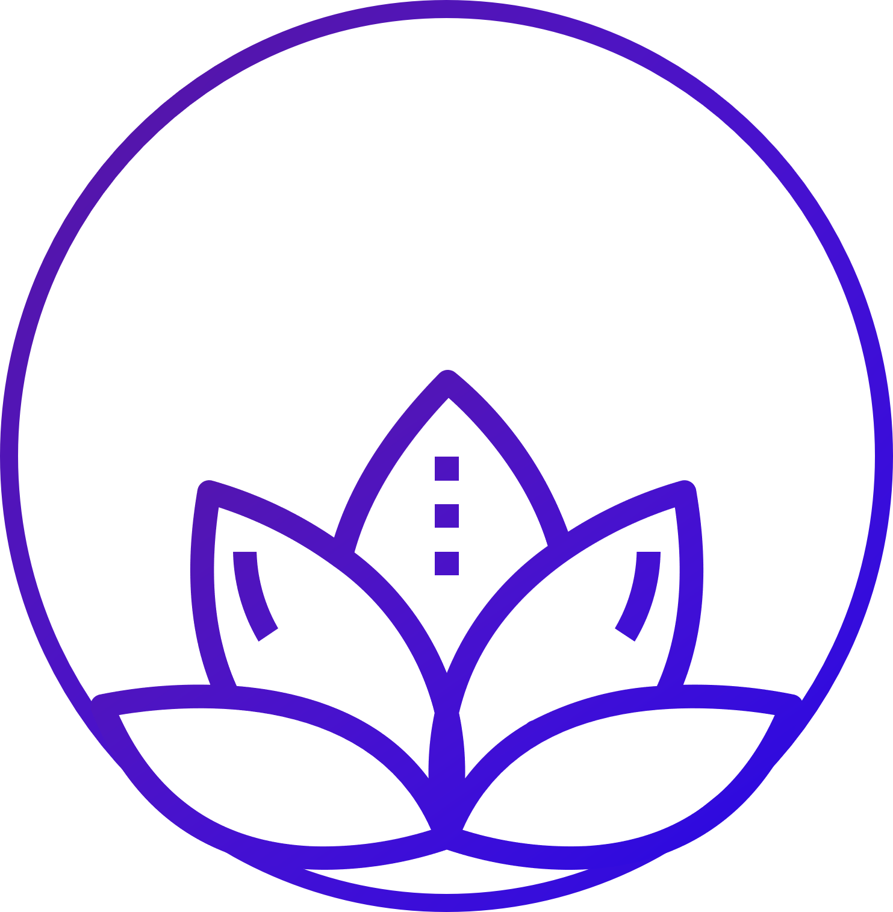

A escolha do Sentimento

Selina é uma jovem aprendiz dos sentimentos, seu objetivo é entender os segredos por trás das emoções para um dia substituir uma das entidades guardiões.
Durante segundos - o que equivale a milênios para nós - Selina estudou suas três entidades mais instigantes:

Beatiza, a guardiã da felicidade

Quaze Suno, o guardião da tristeza
Timor, o guardião do medo
E, neste exato momento, precisa escolher qual caminho seguir em sua jornada.